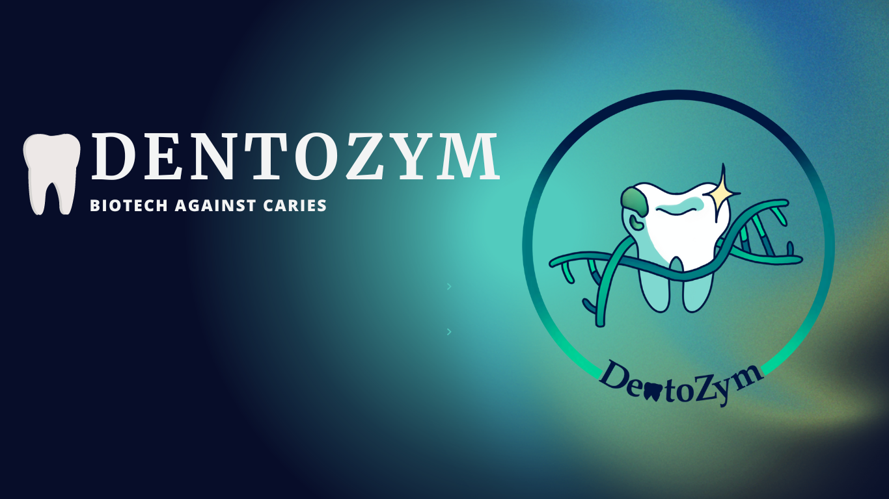
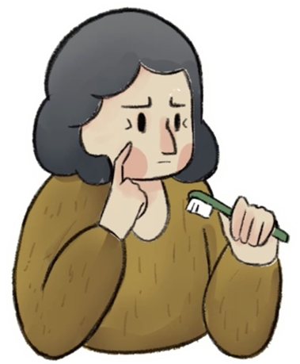
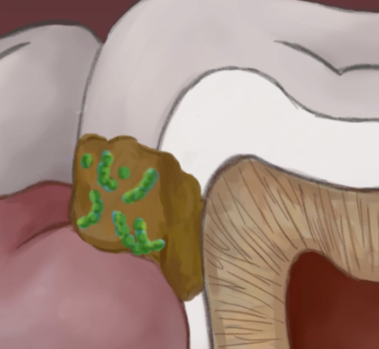

We are DentoZym, the iGEM team from the University of Stuttgart!Caries is the decay of the tooth enamel due to demineralization caused by acids. Not only acids in fruits or drinks have an effect on our teeth but also and manly acids produced by bacteria in our mouth. Embedded and protected by a biofilm these bacteria convert sugars form food into lactic acid, which demineralizes the tooth enamel leading to tooth decay [1]. The main culprit is Streptococcus mutans, a gram-positive bacterium which contributes to the biofilm formation by producing exocellular polymeric substances like exopolysaccharides (EPS) [3].
Our main focus is to prevent tooth decay by attacking the biofilm. We utilize a mixture of enzymes, antimicrobial peptides (AMPs) and glycerol monolaurate for the destruction of biofilms that have already formed on teeth, as well as preventing new biofilms from forming. We intend to develop a mouthwash or toothpaste containing these components, as chewing gum can be difficult for many individuals due to jaw pain or the potential choking hazard.

How do we plan to achieve our goal?Based on our research, we have identified mutanase, dispersin B, and dextranase as enzymes showing promising results in the degradation of biofilms [2]. Biofilms will be targeted using a combination of enzymes, antimicrobial peptides (AMPs), and antimicrobial lipid (AML) glycerol monolaurate (monolaurin). The enzymes will focus on breaking down exopolysaccharides (EPS), which are crucial for the integrity of the biofilm [3]. By destroying the EPS, bacterial cells within the biofilm will be released, making them susceptible to the AMPs [4]. The AMPs and glycerol monolaurate will then help prevent the formation of new biofilms by eliminating the exposed bacteria [5][6]. Thus, our product, DentoZym, is designed to prevent or halt the formation of caries at any stage of biofilm or caries development. To produce the necessary enzymes, we plan to use Pichia pastoris, a methylotrophic yeast commonly employed as an expression system for recombinant protein production [7]. The enzyme mutanase requires O-glycosylation, which necessitates the use of a eukaryotic organism for production [8]. Our plan involves synthesizing all three enzymes in this microorganism and enabling their secretion. For the production of the AMPs, we plan to use E. coli due to the fact, that these bacteria are easy to handle, and the AMPs don’t require any glycosylation. To produce glycerol monolaurate we plan to do a shaking flask experiment, using a lipase to convert lauric acid together with glycerol [9].
We invite you to join us in our fight against caries! Stay updated on our progress and journey through our social media, blog, and wiki posts!
[1] Albrecht M, Randig J, Urban C (09.04.2021): Karies - Hintergrund, Stiftung Gesundheit, [online] https://www.stiftung-gesundheitswissen.de/wissen/karies/hintergrund [last visited 03.10.2023]
[2] Otsuka R, Imai S, Murata T, Nomura Y, Okamoto M, Tsumori H, Kakuta E, Hanada N, Momoi Y. Application of chimeric glucanase comprising mutanase and dextranase for prevention of dental biofilm formation. Microbiol Immunol. 2015 Jan;59(1):28-36. doi: 10.1111/1348-0421.12214. PMID: 25411090
[3] Singh S, Datta S, Narayanan KB, Rajnish KN. Bacterial exo-polysaccharides in biofilms: role in antimicrobial resistance and treatments. J Genet Eng Biotechnol. 2021 Sep 23;19(1):140. doi: 10.1186/s43141-021-00242-y. PMID: 34557983; PMCID: PMC8460681.
[4] Limoli DH, Jones CJ, Wozniak DJ. Bacterial Extracellular Polysaccharides in Biofilm Formation and Function. Microbiol Spectr. 2015 Jun;3(3):10.1128/microbiolspec.MB-0011-2014. doi: 10.1128/microbiolspec.MB-0011-2014. PMID: 26185074; PMCID: PMC4657554.
[5] He J, Eckert R, Pharm T, Simanian MD, Hu C, Yarbrough DK, Qi F, Anderson MH, Shi W. Novel synthetic antimicrobial peptides against Streptococcus mutans. Antimicrob Agents Chemother. 2007 Apr;51(4):1351-8. doi: 10.1128/AAC.01270-06. Epub 2007 Feb 12. PMID: 17296741; PMCID: PMC1855471.
[6] Borrelli L, Varriale L, Dipineto L, Pace A, Menna LF and Fioretti A (2021) Insect Derived Lauric Acid as Promising Alternative Strategy to Antibiotics in the Antimicrobial Resistance Scenario. Front. Microbiol. 12:620798. doi: 10.3389/fmicb.2021.620798.
[7] Karbalaei M, Rezaee SA, Farsiani H. Pichia pastoris: A highly successful expression system for optimal synthesis of heterologous proteins. J Cell Physiol. 2020 Sep;235(9):5867-5881. doi: 10.1002/jcp.29583. Epub 2020 Feb 14. PMID: 32057111; PMCID: PMC7228273.
[8] Fuglsang CC, Berka RM, Wahleithner JA, Kauppinen S, Shuster JR, Rasmussen G, Halkier T, Dalboge H, Henrissat B. Biochemical analysis of recombinant fungal mutanases. A new family of alpha1,3-glucanases with novel carbohydrate-binding domains. J Biol Chem. 2000 Jan 21;275(3):2009-18. doi: 10.1074/jbc.275.3.2009. PMID: 10636904.
[9] Satyawali Y, Cauwenberghs L, Maesen M, Dejonghe W.Lipase catalyzed solvent free synthesis of monoacylglycerols in various reaction systems and coupling reaction with pervaporation for in situ water removal. Elsevier B.V. Chemical Engineering and Processing – Process Intensification, Volume 166, Sept 2021, 108475. doi: 10.1016/j.cep.2021.108475.
© 2023 - Content on this site is licensed under a Creative Commons Attribution 4.0 International license.
The repository used to create this website is available at gitlab.igem.org/2023/stuttgart.